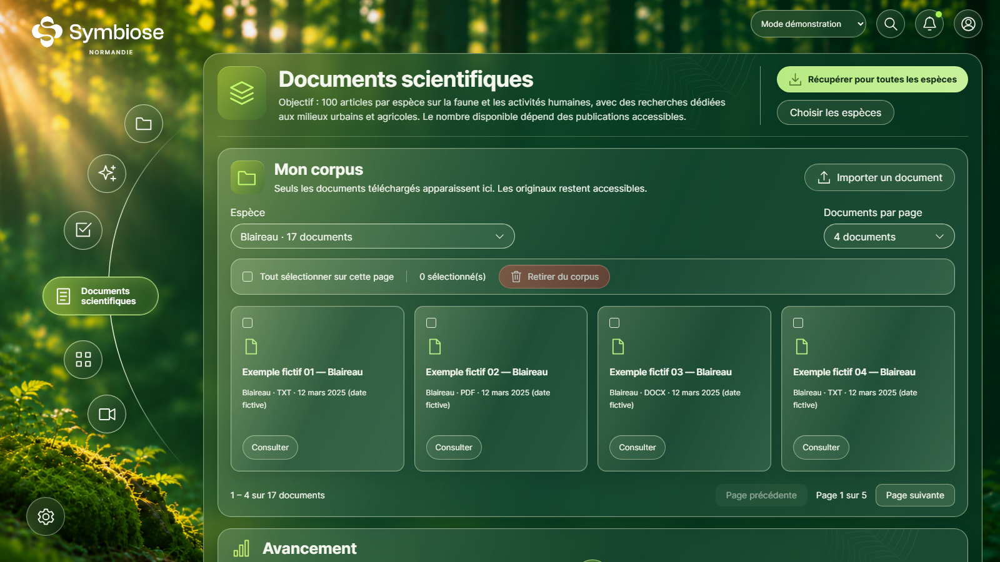
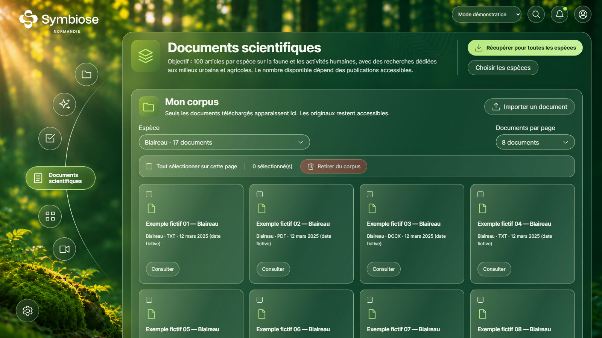
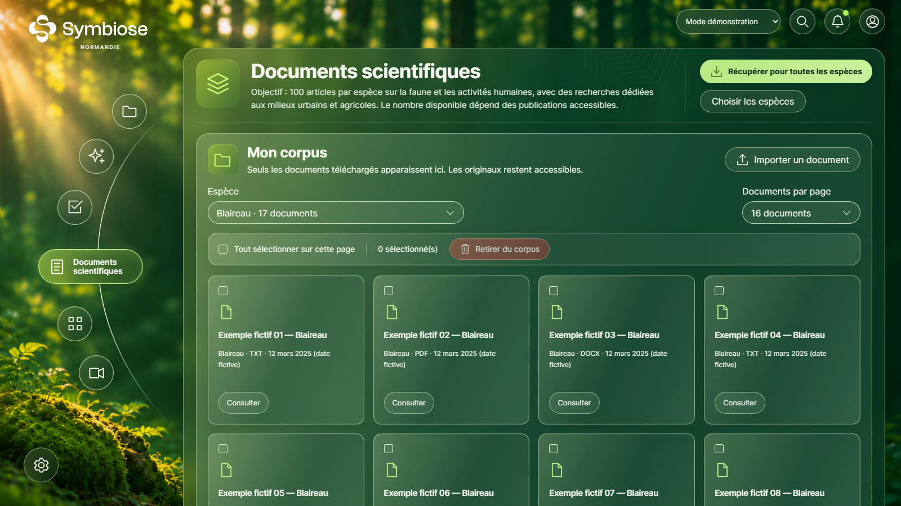
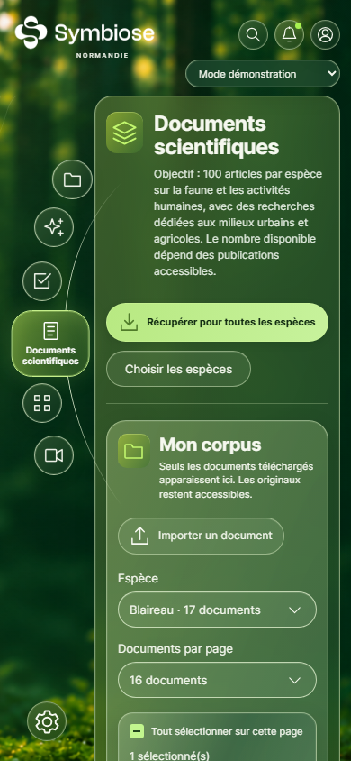
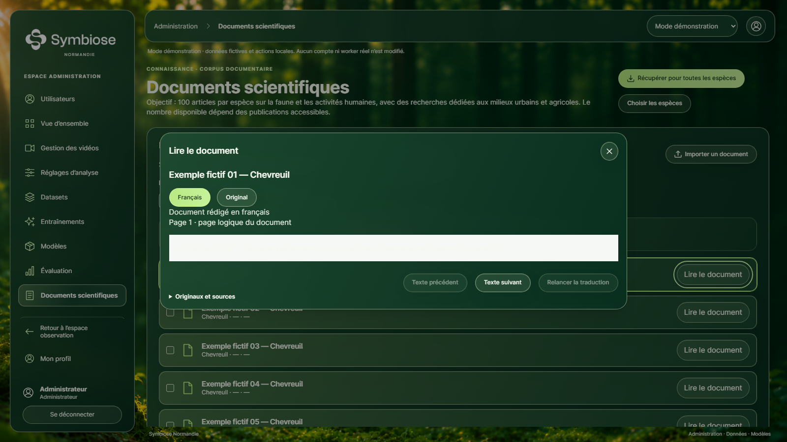

Documents scientifiques — Étape 11
Grille responsive, tailles 4/8/12/16 et préférence indépendante. Les publications montrées sont des exemples explicitement fictifs.
Fichiers, comportement et limites · 64 scénarios navigateur validés · 71 tests unitaires · Bilan des vérifications
Rapports bruts : série complète, 63/64 puis recontrôle documentaire, 7/7 après synchronisation du test d’import sur la fermeture native du dialogue.
4 documents : une ligne de quatre cartes, sélecteurs alignés et compteur.
8 documents : deux lignes, avec défilement naturel.
16 documents par défaut : quatre lignes de quatre cartes.
Voir les seize cartes sur la capture complète
Une colonne sur mobile ; le nombre de documents reste indépendant du nombre de colonnes.
Administration : présentation en lignes et actions existantes conservées.